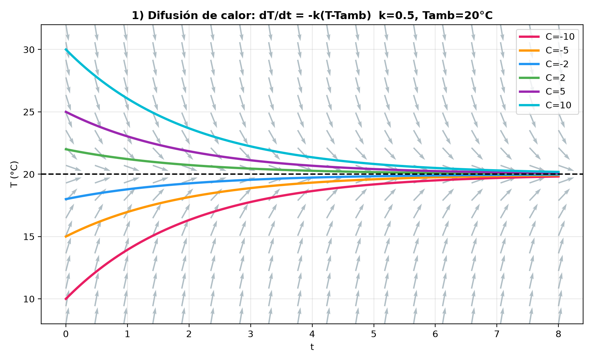
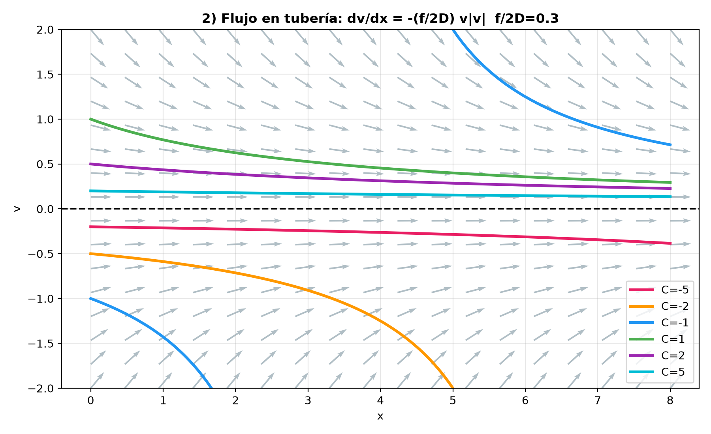
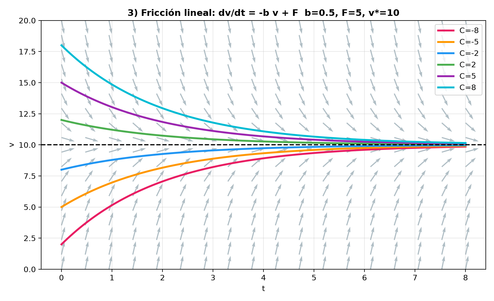
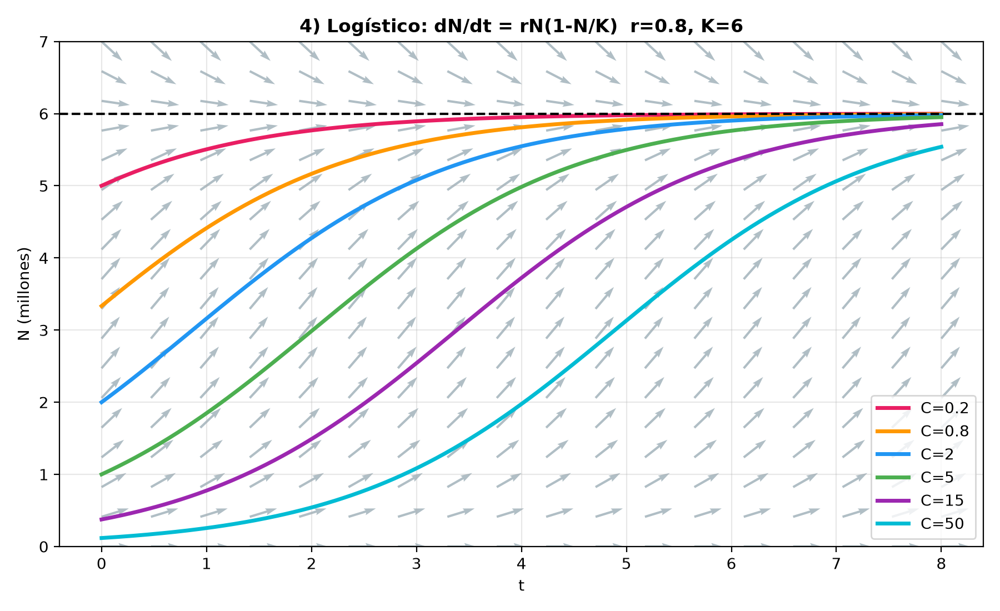

EJERCICIO 1 • CALOR
🌡️ 1) Difusión de Calor
Ecuación: dT/dt = -k(T - Tamb) | Solución: T(t) = Tamb + C·e-kt | k=0.5, Tamb=20°C

¿Qué se ve? Todas las curvas se acercan a 20°C. Si el cuerpo está caliente se enfría, si está frío se calienta. El equilibrio es estable.
Ver imagen en grande ↗
EJERCICIO 2 • FLUIDOS
🚰 2) Flujo en Tubería Horizontal
Ecuación: dv/dx = -(f/2D)·v|v| | Solución: v(x) = 1 / (a·x + C) | a = 0.3

¿Qué se ve? La velocidad siempre disminuye por fricción. Si v>0 baja hacia 0, si v<0 se hace más negativa.
Ver imagen en grande ↗
EJERCICIO 3 • MOVIMIENTO
🏃 3) Movimiento bajo Fricción Lineal
Ecuación: dv/dt = -b·v + F | Solución: v(t) = F/b + C·e-bt | b=0.5, F=5, v*=10

¿Qué se ve? No importa dónde empieces, todas las curvas terminan en v = 10. Es la velocidad terminal.
Ver imagen en grande ↗
EJERCICIO 4 • POBLACIÓN
👥 4) Crecimiento Poblacional Logístico
Ecuación: dN/dt = r·N(1 - N/K) | Solución: N(t) = K / (1 + C·e-rt) | r=0.8, K=6 millones

¿Qué se ve? Forma de S. Crece rápido al inicio y luego se frena al llegar a la capacidad máxima K=6 millones.
Ver imagen en grande ↗🐍 Código en Python
Hecho con NumPy + Matplotlib • Campo de direcciones con quiver + curvas solución